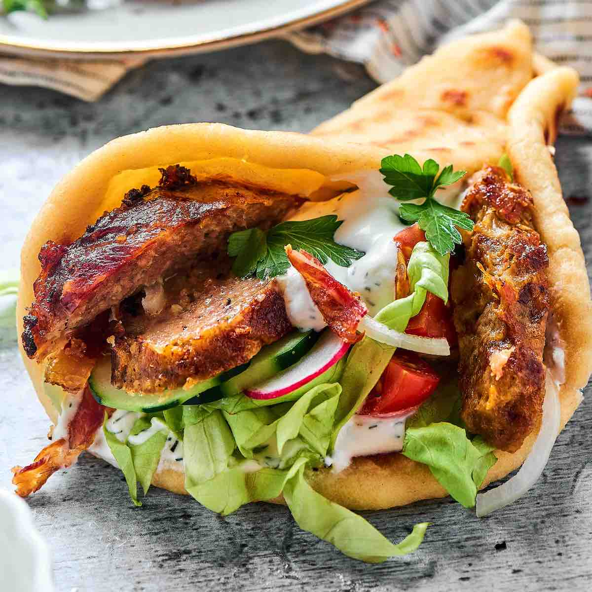

<!-- 
File: Assignment1.html
Gui Assignment: Creating Your First Web Page
Description: This website provides a list of my top five favorite foods which have descriptions of the foods and links to specific resturants I go to.
The table at the bottom also shows honerable mentions and the website is intended to just give my opinion on food and provide links for anyone curious on the food spots I like.
Zuriel Pagan, UMass Lowell Computer Science, zuriel_pagan@student.uml.edu
Copywright (c) 2024 by Zuriel.  All rights reserved.  May be freely copied or excerpted for educational purposes with credit to the author.
updated by ZP on May 14, 2024 at 2:28 PM
updated by ZP on May 15, 2024 at 2:13 PM
updated by ZP ob Mat 16, 2024 at 10:38 PM
-->

<!DOCTYPE html>
<html lang="en">
<head>
 <meta charset="utf-8">
 <!--Title Of Website-->
 <title>Zuriel's Top 5 Favorite Foods</title>
 <link rel="stylesheet" href="Style.css/Style.css">
</head>
<body>
    <!--Top Header-->
  <h1>Zuriel's Top 5 Favorite Foods</h1>
  <!--1st Place Food-->
  <h2>1<sup>st</sup> - <b>Sushi Burrito</b></h2>
 <div>
<!--Image 1-->
    <div class="sidebar">
        <p>
            Topping the list of favorite foods is the sushi burrito.  It is a 
            perfect fushion of fresh sushi wrapped together in a convenient burrito shapped
            form.  It takes everything there is to love about sushi and transforms it into a meal
            that's perfect for travel any time of day.
         </p>
        </div>
   
   <br>
   <!--Link 1-->
   <a href="https://loveartsushi.com/" target="_blank">My Favorite Sushi Burrito Spot</a>
 </div>
<!--2nd Place Food-->
  <h2>2<sup>nd</sup> - <b>Bahn Mi</b></h2>
 <div>
    <!--Image 2-->
    <div class="sidebar">
        <p>
         Coming in second on the list of favorite foods is the bahn mi, a vietnamese
         sandwich that perfectly blends savory meats, pickled vegetables, fresh herbs,
         and patte into a crispy baguette.  The mix of spicy, sweet, and tangy flavors 
         make every bahn mi a tasty experience.
         </p>
        </div>
   
   <br>
   <!--Link 2-->
   <a href="https://www.saigonsandwichhouse.com/" target="_blank">My Favorite Bahn Mi Spot</a>
 </div>
<!--3rd Place Food-->
  <h2>3<sup>rd</sup> - <b>Soup Dumplings</b></h2>
  <div>
    <!--Image 3-->
    <div class="sidebar">
        <p>
            Third on the list are soup dumplings, which offer a tasty burst of rich
            brotht and tender filling in each dumpling.  Soup dumplings are a comforting and 
            flavorful treat that makes them a standout chinese dish.  
         </p>
        </div>
  
  <br>
  <!--Link 3-->
  <a href="https://nanxiangexpress.com/" target="_blank">My Favorite Soup Dumpling Spot</a>
 </div>
 <!--4th Place Food-->
 <h2>4<sup>th</sup> - <b>Butter Chicken </b></h2>
 <div>
<!--Image 4-->
    <div class="sidebar">
        <p>
            in fourth place is butter chicken, a classic indian dish known for its creamy,
            spiced tomato sauce and tender marinated chicken.  The dish is a perfect blend of 
            aromatic spices and rich flavors that create a comforting and delightful meal.
         </p>
        </div>
  
  <br>
  <!--Link 4-->
  <a href="https://www.tawatandoorhaverhill.com/" target="_blank">My Favorite Butter Chicken Spot</a>
 </div>
<!--5th Place Food-->
 <h2>5<sup>th</sup> - <b>Gyro</b></h2>
 <div>
    <!--Image 5-->
    <div class="sidebar">
   <p>
        Roudning into fifth place are gyros, a greek staple that features seasoned meat,
        fresh vegetables, and a tangy tzatziki sauce all wrapped together in a warm pita bread.  
        The combination of flavors creates a delightful and satisfying meal.  
    </p>
   </div>
  
  <br>
<!--Link 5-->
  <a href="https://thefatgreekusa.com/" target="_blank">My Favorite Gyro Spot</a>
 </div>

<hr />

<!--Tables-->
    <h3>Honerable Mentions</h3>
    <table>
        <thead>
        <tr>
            <th>Type Of Food</th>
            <th>Food Name</th>
        </tr>
        </thead>

        <tbody>
            <tr>
                <td>Asian </td>
                <td>Ramen </td>
            </tr>
            <tr>
                <td>Greek </td>
                <td>Falafel </td>
            </tr>
            <tr>
                <td>Korean </td>
                <td>Tteokbokki </td>
            </tr>
            <tr>
                <td>Mexican </td>
                <td>Birria Tacos </td>
            </tr>
            <tr>
                <td>American </td>
                <td>Key Lime Pie </td>
            </tr>
        </tbody>
    </table>
<div style="margin-top:100px"></div>
<footer>
    <p>Copywright &copy; 2024, Zuriel Pagan </p>
    <p>
        <a href="http://jigsaw.w3.org/css-validator/check/referer">
            
        </a>
    </p>
                
</footer>
</body>
</html>

